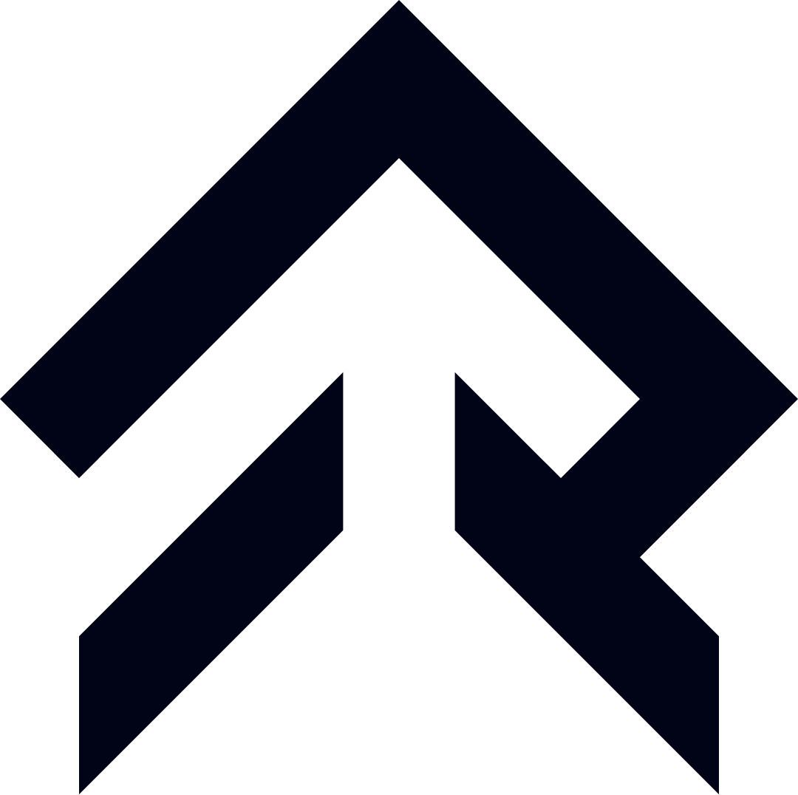

01Seed round · Confidential · 2026
Rankacy AI
We predict human behaviour under pressure. Behavioral AI research & product company — data from simulators → AI for human performance.
Scroll to begin ↓

JMC a.s.JMC captures data from simulators and simulations and trains AI to read the decisive moment — who holds, who breaks. Built in gaming. Made for the real world.
The signalHigh-resolution behavioral data from simulators and simulations.
The engineProprietary AI trained on decision-making under stress.
The outputDecision support across gaming and dual-use domains.
We instrument simulators and simulations to record how people decide under time pressure — at a resolution traditional assessment misses.
PhD engineers clean, structure and train on the data using modern transformer and cross-attention architectures.
Anticipate decisions and rehearse high-stakes situations — before lives or training budgets are on the line.
The same engine extends from gaming into defense, training and crisis simulation. Civilian innovation, security-grade reach.
Pattern detection flags anomalies — from cheating to protecting minors online — far faster than human review.
Proven in games. Transferable to education, healthcare, industry and public administration.
Our foundation model — like ChatGPT, but trained on behavior instead of text. It scores performance, predicts how a person acts under pressure, and guides improvement. Flash for real time, Pro for depth.
Prediction accuracy · in-game decision tasks
The limbic system for AGI. Where reasoning models chase System 2, Mesocort captures System 1 — the fast, instinctive reactions other AI ignores — and trains HUBERT to read limbic states under real pressure.
Flow · Tilt · Clutch · Choke · Panic
A decision-support system that turns hundreds of terabytes of match data into clear feedback. A digital coach — deep analysis, strengths and weaknesses, progression, automatic 4K highlights.
Advanced AI-powered after-action review for defense simulations. We capture data from drone simulators and deliver AI live coaching — debriefing every decision the moment it is made, not hours later.
From the cockpit to the debrief — in real time
Built JMC's behavioral-AI venture from zero — raw simulation data to a global platform — setting company strategy and bringing top technology and foreign capital into the region.
Owns the product — shaping the data and ML pipeline and the GPRT model family from raw petabyte-scale datasets into products people rely on.
Leads engineering and technology — the platforms, infrastructure and dual-use architecture that carry JMC's models beyond gaming.
In collaboration with researchers from VŠB – Technical University of Ostrava and an Oxford-trained AI advisor who has counseled leading global technology investors.
Featured at Gamescom (Cologne) via CzechInvest · Active with the City of Ostrava and the Moravian-Silesian Region on applied AI.
Source: public Czech business registers (Ministry of Justice / Ministry of Finance). The registered scope was broadened in 2024–2025 to cover software, IT consultancy, data processing, web portals, training and virtual-asset services — the legal base for JMC's applied-AI work.
Fourteen slides on Behavioral AI — the insight, the data moat, the models, the market and the raise.
Partner with JMC on behavioral data, simulation and dual-use AI — from gaming integrity to high-stakes training.